JVM过去过来就问了这么些问题，没怎么变，内存模型和GC算法这块问得比较多，可以在网上多找几篇博客来看看。
推荐书籍：《深入理解java虚拟机》
1. 内存模型以及分区，需要详细到每个区放什么。
JVM内存模型如下图所示:
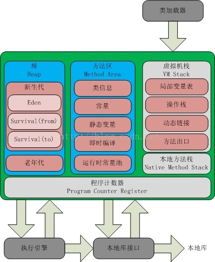
此处我们集中注意中间绿色的部分，该部分为JVM的运行时内存，该部分包含了：
线程私有的（灰色）：
1. 程序计数器：记录执行到第几条指令
2. 虚拟机方法栈：执行Java方法所用，每执行一个方法便加入一个栈帧，里面含有局部变量表、操作栈、动态链接和方法出口等
3. 本地方法栈：与虚拟机方法栈相似，用于执行native方法
线程共享的（蓝色）：
1. 堆：对象实例存放地，，分为年轻代和老年代。年轻代又细分为伊甸园区和两个相对的Survival区
2. 方法区：也叫永久代，存放了类的信息、常量、类静态变量等元素，含有一个运行时常量池
2. 堆里面的分区：Eden，survival from to，老年代，各自的特点
1.Eden区
Eden区位于Java堆的年轻代，是新对象分配内存的地方，由于堆是所有线程共享的，因此在堆上分配内存需要加锁。而Sun JDK为提升效率，会为每个新建的线程在Eden上分配一块独立的空间由该线程独享，这块空间称为TLAB（Thread Local Allocation Buffer）。在TLAB上分配内存不需要加锁，因此JVM在给线程中的对象分配内存时会尽量在TLAB上分配。如果对象过大或TLAB用完，则仍然在堆上进行分配。如果Eden区内存也用完了，则会进行一次Minor GC（young GC）。
2.Survival from to
Survival区与Eden区相同都在Java堆的年轻代。Survival区有两块，一块称为from区，另一块为to区，这两个区是相对的，在发生一次Minor GC后，from区就会和to区互换。在发生Minor GC时，Eden区和Survival from区会把一些仍然存活的对象复制进Survival to区，并清除内存。Survival to区会把一些存活得足够旧的对象移至年老代。
3.年老代
年老代里存放的都是存活时间较久的，大小较大的对象，因此年老代使用标记整理算法。当年老代容量满的时候，会触发一次Major GC（full GC），回收年老代和年轻代中不再被使用的对象资源。
3. 对象创建方法，对象的内存分配，对象的访问定位
对象的创建
Java对象的创建大致上有以下几个步骤：
1. 类加载检查：检查这个指令的参数是否能在常量池中定位到一个类的符号引用，并且检查这个符号引用代表的类是否已被加载、解析和初始化过。如果没有，那必须先执行相应的类的加载过程
2. 为对象分配内存：对象所需内存的大小在类加载完成后便完全确定，为对象分配空间的任务等同于把一块确定大小的内存从Java堆中划分出来。由于堆被线程共享，因此此过程需要进行同步处理（分配在TLAB上不需要同步）
3. 内存空间初始化：虚拟机将分配到的内存空间都初始化为零值（不包括对象头），内存空间初始化保证了对象的实例字段在Java代码中可以不赋初始值就直接使用，程序能访问到这些字段的数据类型所对应的零值。
4. 对象设置：JVM对对象头进行必要的设置，保存一些对象的信息（指明是哪个类的实例，哈希码，GC年龄等）
5. init：执行完上面的4个步骤后，对JVM来说对象已经创建完毕了，但对于Java程序来说，我们还需要对对象进行一些必要的初始化。
对象的内存分配
Java对象的内存分配有两种情况，由Java堆是否规整来决定（Java堆是否规整由所采用的垃圾收集器是否带有压缩整理功能决定）：
1. 指针碰撞(Bump the pointer)：如果Java堆中的内存是规整的，所有用过的内存都放在一边，空闲的内存放在另一边，中间放着一个指针作为分界点的指示器，分配内存也就是把指针向空闲空间那边移动一段与内存大小相等的距离
2. 空闲列表(Free List)：如果Java堆中的内存不是规整的，已使用的内存和空闲的内存相互交错，就没有办法简单的进行指针碰撞了。虚拟机必须维护一张列表，记录哪些内存块是可用的，在分配的时候从列表中找到一块足够大的空间划分给对象实例，并更新列表上的记录
对象的访问定位
对象的访问形式取决于虚拟机的实现，目前主流的访问方式有使用句柄和直接指针两种：
使用句柄：
如果使用句柄访问，Java堆中将会划分出一块内存来作为句柄池，引用中存储的就是对象的句柄地址，而句柄中包含了对象实例数据与类型数据各自的具体地址信息：
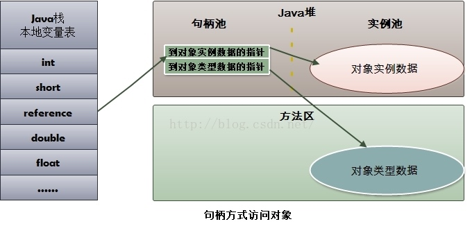
优势：引用中存储的是稳定的句柄地址，在对象被移动(垃圾收集时移动对象是非常普遍的行为)时只会改变句柄中的实例数据指针，而引用本身不需要修改。
直接指针：
如果使用直接指针访问对象，那么对象的实例数据中就包含一个指向对象类型数据的指针，引用中存的直接就是对象的地址：
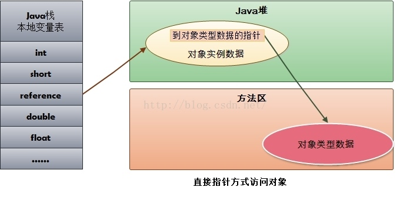
优势：速度更快，节省了一次指针定位的时间开销，积少成多的效应非常可观。
4. GC的两种判定方法：引用计数与引用链
基于引用计数与基于引用链这两大类别的自动内存管理方式最大的不同之处在于：前者只需要局部信息，而后者需要全局信息
引用计数
引用计数顾名思义，就是记录下一个对象被引用指向的次数。引用计数方式最基本的形态就是让每个被管理的对象与一个引用计数器关联在一起，该计数器记录着该对象当前被引用的次数，每当创建一个新的引用指向该对象时其计数器就加1，每当指向该对象的引用失效时计数器就减1。当该计数器的值降到0就认为对象死亡。每个计数器只记录了其对应对象的局部信息——被引用的次数，而没有（也不需要）一份全局的对象图的生死信息。由于只维护局部信息，所以不需要扫描全局对象图就可以识别并释放死对象；但也因为缺乏全局对象图信息，所以无法处理循环引用的状况。
引用链
引用链需要内存的全局信息，当使用引用链进行GC时，从对象图的“根”（GC Root，必然是活的引用，包括栈中的引用，类静态属性的引用，常量的引用，JNI的引用等）出发扫描出去，基于引用的可到达性算法来判断对象的生死。这使得对象的生死状态能批量的被识别出来，然后批量释放死对象。引用链不需要显式维护对象的引用计数，只在GC使用可达性算法遍历全局信息的时候判断对象是否被引用，是否存活。
5. GC的三种收集方法：标记清除、标记整理、复制算法的原理与特点，分别用在什么地方
标记清除
标记清除算法分两步执行：
1. 暂停用户线程，通过GC Root使用可达性算法标记存活对象
2. 清除未被标记的垃圾对象
标记清除算法缺点如下：
1. 效率较低，需要暂停用户线程
2 . 清除垃圾对象后内存空间不连续，存在较多内存碎片
标记算法如今使用的较少了
复制算法
复制算法也分两步执行，在复制算法中一般会有至少两片的内存空间（一片是活动空间，里面含有各种对象，另一片是空闲空间，里面是空的）：
1. 暂停用户线程，标记活动空间的存活对象
2. 把活动空间的存活对象复制到空闲空间去，清除活动空间
复制算法相比标记清除算法，优势在于其垃圾回收后的内存是连续的。
但是复制算法的缺点也很明显：
1. 需要浪费一定的内存作为空闲空间
2. 如果对象的存活率很高，则需要复制大量存活对象，导致效率低下
复制算法一般用于年轻代的Minor GC，主要是因为年轻代的大部分对象存活率都较低
标记整理
标记整理算法是标记清除算法的改进，分为标记、整理两步：
1. 暂停用户线程，标记所有存活对象
2. 移动所有存活对象，按内存地址次序一次排列，回收末端对象以后的内存空间
标记整理算法与标记清除算法相比，整理出的内存是连续的；而与复制算法相比，不需要多片内存空间。
然而标记整理算法的第二步整理过程较为麻烦，需要整理存活对象的引用地址，理论上来说效率要低于复制算法。
因此标记整理算法一般引用于老年代的Major GC
6. GC收集器有哪些？它们的特点是？
常见的GC收集器如下图所示，连线代表可搭配使用：
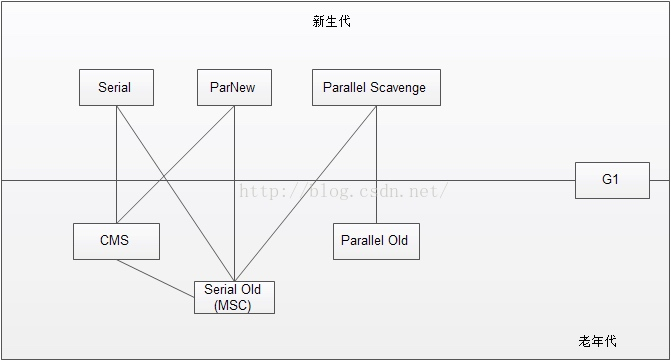
1.Serial收集器（串行收集器）
用于新生代的单线程收集器，收集时需要暂停所有工作线程（Stop the world）。优点在于：简单高效，单个CPU时没有线程交互的开销，堆较小时停顿时间不长。常与Serial Old 收集器一起使用，示意图如下所示：
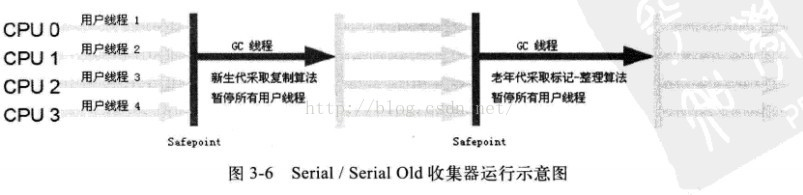
2.ParNew收集器（parallel new 收集器，新生代并行收集器）
Serial收集器多线程版本，除了使用多线程外和Serial收集器一模一样。常与Serial Old 收集器一起使用，示意图如下：
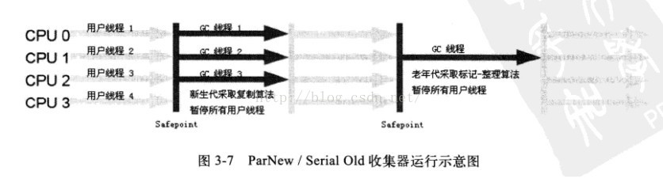
3.Parallel Scavenge收集器
与ParNew收集器一样是一款多线程收集器，其特点在于关注点与别的GC收集器不同：一般的GC收集器关注于缩短工作线程暂停的时间，而该收集器关注于吞吐量，因此也被称为吞吐量优先收集器。（吞吐量 = 用户运行代码时间 / (用户运行代码时间 + 垃圾回收时间)）高吞吐量与停顿时间短相比主要强调任务快完成，因此常和Parallel Old 收集器一起使用（没有Parallel Old之前与Serial Old一起使用），示意图如下：
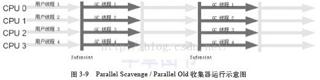
4.Serial Old收集器
Serial收集器的年老代版本，不在赘述。
5.Parallel Old收集器
年老代的并行收集器，在JDK1.6开始使用。
6.CMS收集器（Concurrent Mark Sweep，并发标记清除收集器）
CMS收集器是一个年老代的收集器，是以最短回收停顿时间为目标的收集器，其示意图如下所示：
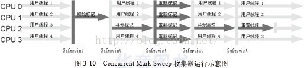
CMS收集器基于标记清除算法实现，主要分为4个步骤：
1. 初始标记，需要stop the world，标记GC Root能关联到的对象，速度快
2. 并发标记，对GC Root执行可达性算法
3. 重新标记，需要stop the world，修复并发标记时因用户线程运行而产生的标记变化，所需时间比初始标记长，但远比并发标记短
4. 并发清理
CMS收集器的缺点在于：
1. 其对于CPU资源很敏感。在并发阶段，虽然CMS收集器不会暂停用户线程，但是会因为占用了一部分CPU资源而导致应用程序变慢，总吞吐量降低。其默认启动的回收线程数是（cpu数量+3）/4，当cpu数较少的时候，会分掉大部分的cpu去执行收集器线程
2. 无法处理浮动垃圾，浮动垃圾即在并发清除阶段因为是并发执行，还会产生垃圾，这一部分垃圾即为浮动垃圾，要等下次收集
3. CMS收集器使用的是标记清除算法，GC后会产生碎片
7.G1收集器（Garbage First收集器）
相比CMS收集器，G1收集器主要有两处改进：
1. 使用标记整理算法，确保GC后不会产生内存碎片
2. 可以精确控制停顿，允许指定消耗在垃圾回收上的时间
G1收集器可以实现在基本不牺牲吞吐量的前提下完成低停顿的内存回收，这是由于它能够极力地避免全区域的垃圾收集，之前的收集器进行收集的范围都是整个新生代或老年代，而G1将整个Java堆（包括新生代、老年代）划分为多个大小固定的独立区域（Region），并且跟踪这些区域里面的垃圾堆积程度，在后台维护一个优先列表，每次根据允许的收集时间，优先回收垃圾最多的区域（这就是Garbage First名称的来由）。区域划分及有优先级的区域回收，保证了G1收集器在有限的时间内可以获得最高的收集效率。
7. Minor GC与Full GC分别在什么时候发生？
Minor GC也叫Young GC，当年轻代内存满的时候会触发，会对年轻代进行GC
Full GC也叫Major GC，当年老代满的时候会触发，当我们调用System.gc时也可能会触发，会对年轻代和年老代进行GC
8. 类加载的五个过程：加载、验证、准备、解析、初始化
JVM把class文件加载的内存，并对数据进行校验、转换解析和初始化，最终形成JVM可以直接使用的Java类型的过程就是加载机制。
类从被加载到虚拟机内存中开始，到卸载出内存为止，它的生命周期包括了：加载(Loading)、验证(Verification)、准备(Preparation)、解析(Resolution)、初始化(Initialization)、使用(Using)、卸载(Unloading)七个阶段，其中验证、准备、解析三个部分统称链接。
1.加载
在加载阶段，虚拟机需要完成以下事情：
1. 通过一个类的权限定名来获取定义此类的二进制字节流
2. 将这个字节流所代表的静态存储结构转化为方法区的运行时数据结构
3. 在java堆中生成一个代表这个类的java.lang.Class对象，作为方法去这些数据的访问入口
2.验证
在验证阶段，虚拟机主要完成：
1. 文件格式验证：验证class文件格式规范
2. 元数据验证：这个阶段是对字节码描述的信息进行语义分析，以保证起描述的信息符合java语言规范要求
3. 字节码验证：进行数据流和控制流分析，这个阶段对类的方法体进行校验分析，这个阶段的任务是保证被校验类的方法在运行时不会做出危害虚拟机安全的行为
4. 符号引用验证：符号引用中通过字符串描述的全限定名是否能找到对应的类、符号引用类中的类，字段和方法的访问性(private、protected、public、default)是否可被当前类访问
3.准备
准备阶段是正式为类变量（被static修饰的变量）分配内存并设置变量初始值（0值）的阶段，这些内存都将在方法区中进行分配
4.解析
解析阶段是虚拟机将常量池内的符号引用替换为直接引用的过程
常见的解析有四种：
1. 类或接口的解析
2. 字段解析
3. 类方法解析
4. 接口方法解析
5.初始化
初始化阶段才真正开始执行类中定义的java程序代码，初始化阶段是执行类构造器
9. 双亲委派模型：Bootstrap ClassLoader、Extension ClassLoader、ApplicationClassLoader
JVM的类加载是通过类加载器实现的， Java中的类加载器体系结构如下：
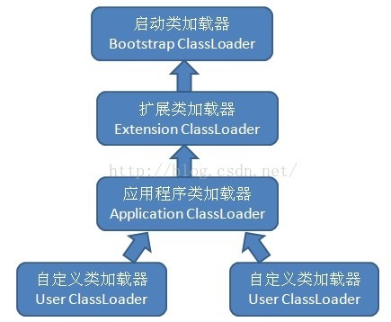
- 启动类加载器（Bootstrap ClassLoader）：是用本地代码实现的类装入器，它负责将
/lib下面的类库加载到内存中（比如rt.jar）。由于引导类加载器涉及到虚拟机本地实现细节，开发者无法直接获取到启动类加载器的引用，所以不允许直接通过引用进行操作 - 标准扩展类加载器：是由 Sun 的 ExtClassLoader（sun.misc.Launcher$ExtClassLoader）实现的。它负责将< Java_Runtime_Home >/lib/ext或者由系统变量 java.ext.dir指定位置中的类库加载到内存中。开发者可以直接使用标准扩展类加载器
- 应用程序类加载器：由sun.misc.Launcher$AppClassLoader实现，负责加载用户类路径classpath上所指定的类库，是类加载器ClassLoader中的getSystemClassLoader()方法的返回值，开发者可以直接使用应用程序类加载器，如果程序中没有自定义过类加载器，该加载器就是程序中默认的类加载器 值得注意的是：上述三个JDK提供的类加载器虽然是父子类加载器关系，但是没有使用继承，而是使用了组合关系。
从JDK1.2开始，JVM规范推荐开发者使用双亲委派模式(ParentsDelegation Model)进行类加载，其加载过程如下：
1. 如果一个类加载器收到了类加载请求，它首先不会自己去尝试加载这个类，而是把类加载请求委派给父类加载器去完成
2. 每一层的类加载器都把类加载请求委派给父类加载器，直到所有的类加载请求都传递给顶层的启动类加载器
3. 如果顶层的启动类加载器无法完成加载请求，则子类加载器会尝试去加载，如果连最初发起类加载请求的类加载器也无法完成加载请求时，将会抛出ClassNotFoundException，而不再调用其子类加载器去进行类加载
采用双亲委派模型的好处在于：使得java类随着它的类加载器一起具备了一种带有优先级的层次关系，越是基础的类，越是被上层的类加载器进行加载，保证了java程序的稳定运行。
10. 分派：静态分派与动态分派
要理解分派，我们先来理解Java中的两种类型：
- 静态类型：变量声明时的类型
- 实际类型：变量实例化时采用的类型 举例的Java代码如下：
class Car {}
class Bus extends Car {}
public class Main {
public static void main(String[] args) throws Exception {
// Car 为静态类型，Bus 为实际类型
Car car = new Bus();
}
}
静态分派
所有依赖静态类型来定位方法执行版本的分派动作称为静态分派，其典型应用是方法重载（重载是通过参数的静态类型而不是实际类型来选择重载的版本的）。
举例Java代码如下：
class Car {}
class Bus extends Car {}
class Jeep extends Car {}
public class Main {
public static void main(String[] args) throws Exception {
// Car 为静态类型，Car 为实际类型
Car car1 = new Car();
// Car 为静态类型，Bus 为实际类型
Car car2 = new Bus();
// Car 为静态类型，Jeep 为实际类型
Car car3 = new Jeep();
showCar(car1);
showCar(car2);
showCar(car3);
}
private static void showCar(Car car) {
System.out.println("I have a Car !");
}
private static void showCar(Bus bus) {
System.out.println("I have a Bus !");
}
private static void showCar(Jeep jeep) {
System.out.println("I have a Jeep !");
}
}
代码输出如下：
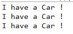
从上面的例子我们可以看出重载调用的具体方法版本是由静态类型来决定的。
动态分派
与静态分派类似，动态分派指在在运行期根据实际类型确定方法执行版本，其典型应用是方法重写（即多态）。
举例Java代码如下：
class Car {
public void showCar() {
System.out.println("I have a Car !");
}
}
class Bus extends Car {
public void showCar() {
System.out.println("I have a Bus !");
}
}
class Jeep extends Car {
public void showCar() {
System.out.println("I have a Jeep !");
}
}
public class Main {
public static void main(String[] args) throws Exception {
// Car 为静态类型，Car 为实际类型
Car car1 = new Car();
// Car 为静态类型，Bus 为实际类型
Car car2 = new Bus();
// Car 为静态类型，Jeep 为实际类型
Car car3 = new Jeep();
car1.showCar();
car2.showCar();
car3.showCar();
}
}
运行结果如下：
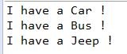
可以看出来重写是一个根据实际类型决定方法版本的动态分派过程。